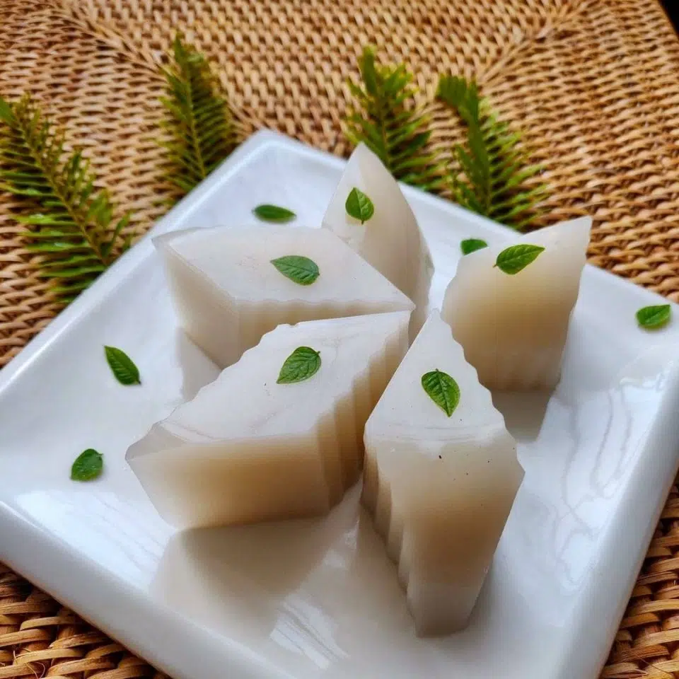

Kyauk Kyaw(Coconut-Jelly)
Myanamr Traditional Food

Ingerdients
- 3 cups coconut water
- 10g agar-agar powder
- 1/2 cup granulated sugar
Instruction
Step by Step
- In a medium-sized saucepan, combine the coconut water, agar-agar powder, and sugar. Stir well to combine.
- Place the saucepan over medium heat and stir constantly until the mixture comes to a boil. Reduce the heat to
low and continue to stir until the agar-agar powder has dissolved completely.
- Remove the saucepan from the heat and let it cool slightly for 5 minutes.
- Pour the mixture into a rectangular container or a mold and let it cool at room temperature.
- Once the mixture has cooled and set, place it in the refrigerator to chill for at least 2 hours or until the jelly is firm.
- To serve, cut the jelly into small cubes and enjoy chilled.
Enjoy your Myanmar Kyauk-Kyaw(Coconut-Jelly)!